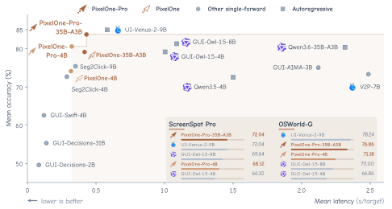
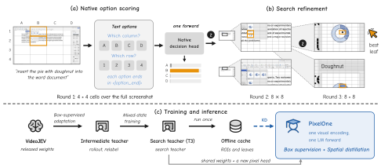
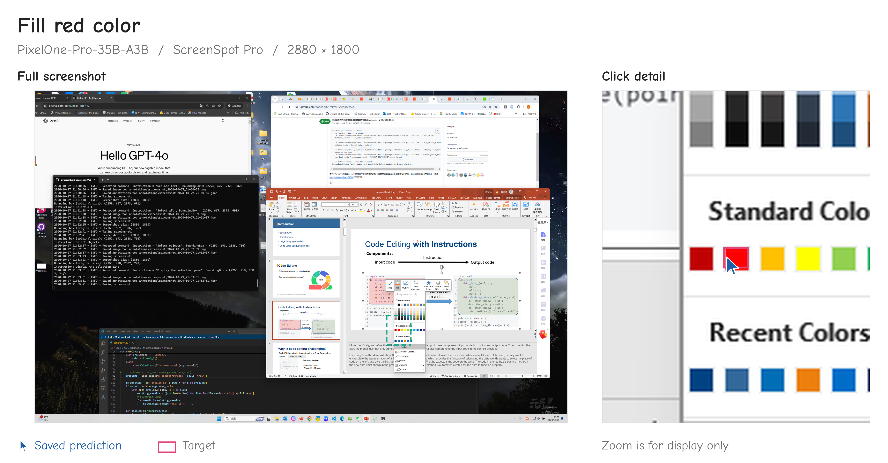

Learn from spatial search
The student inherits the search teacher’s parameters and learns its spatial distributions alongside box supervision.
Native-resolution GUI grounding
* Equal contribution† Project lead‡ Corresponding authors
Native resolution. One forward pass.
PixelOne learns from a teacher’s spatial search, then predicts precise clicks directly from native-resolution screenshots. No search or autoregressive coordinate generation is needed at inference.
Click-aligned loss. Within the selected token, the click depends on the highest-scoring pixel, not the total probability inside the target box. Our winner loss encourages supervised target pixels to outrank non-target pixels.

Native 2K & 4K inputs. Recordings play at original speed.
Pro-4B · 3840 × 2160 · 4/4 verified clicks
This recording could not be loaded. You can open the original MP4 instead.
A 12 × 13-pixel checkbox in a 48-project workbook, followed by cell formatting and a team-level forecast. The business data is fictional, with distinct projects and delivery notes.
Each step pairs a native-resolution screenshot with a supplied instruction. PixelOne predicts the click. Timings shown in the recordings measure model inference, not the full browser-action cycle.
GUI grounding requires precise clicks at low latency. Recent models such as GUI-Decisions and GUI-Swift predict coordinates in one forward pass using fixed global bins with local refinement. However, screenshot downsampling removes detail needed to locate small controls, while fixed bins cover larger pixel ranges at higher resolutions. We introduce PixelOne, which transfers spatial knowledge from a search teacher to a student that predicts clicks directly from screenshots at native resolution. The teacher uses VideoJEV’s text-option scorer to select rows and columns and progressively zoom into candidate regions. The student inherits the teacher’s parameters and matches its distributions over explored regions through spatial distillation alongside box supervision. At inference, the same decision head selects a visual token, and a lightweight pixel head predicts the click within it, all in one forward pass. A click-aligned loss encourages pixels inside the target box to score above those outside. Across four benchmarks, PixelOne-Pro-35B-A3B achieves 83.8% mean accuracy, the highest among the evaluated single-forward grounders, with a mean latency of 0.43 s per target.
Spatial distillation, click-aligned learning, and two-level readout.

The student inherits the search teacher’s parameters and learns its spatial distributions alongside box supervision.
Top20 winner loss encourages supervised target pixels to outrank non-target pixels within the same token.
The decision head selects a visual token. A lightweight pixel head selects the click within it, all in one forward pass.
Four benchmarks. One forward pass.
| Model | ScreenSpot | V2 | Pro | OSWorld-G | Mean ↑ | Latency ↓ |
|---|---|---|---|---|---|---|
| PixelOne-Pro-4B | 90.33 | 92.85 | 68.12 | 71.18 | 80.62 | 0.323 s |
| PixelOne-Pro-35B-A3B | 91.67 | 94.50 | 72.04 | 76.86 | 83.77 | 0.431 s |
Accuracy and latency weight the four benchmarks equally. Latency is measured on an NVIDIA H200 at batch size 1. Both Pro models use the 500K continuation. The 35B-A3B model has 35B total and approximately 3B active parameters.
Scroll within the gallery. Open an image at full resolution.

Saved model predictions on original screenshots. Pink boxes mark targets. Enlarged crops are for display only.
These selected successful cases illustrate click placement and model differences, rather than aggregate performance.
@misc{tian2026pixelone,
title = {PixelOne: From Options to Pixels in a Single Forward for GUI Grounding},
author = {Kanghui Tian and Shuai Dong and Yuhan Zhu and Congcong Wang and Ji Zhao and Tianxiang Jiang and Zhixiong Zhang and Shengyuan Ding and Yi Wang and Jiaqi Wang and Yu Qiao},
year = {2026},
url = {https://tiankanghui.github.io/PixelOne/}
}